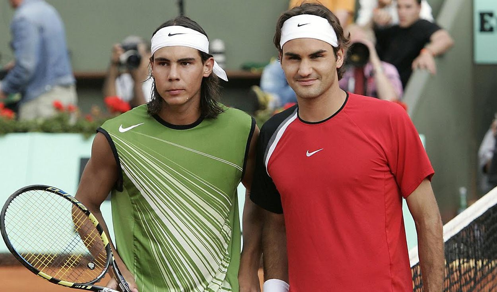
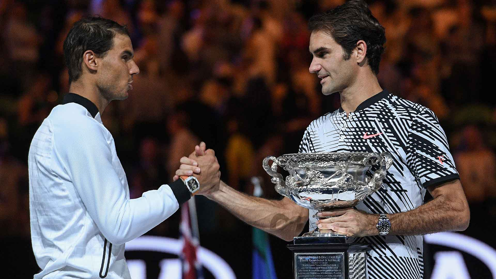
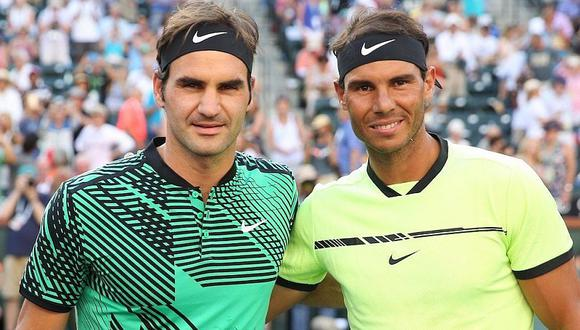
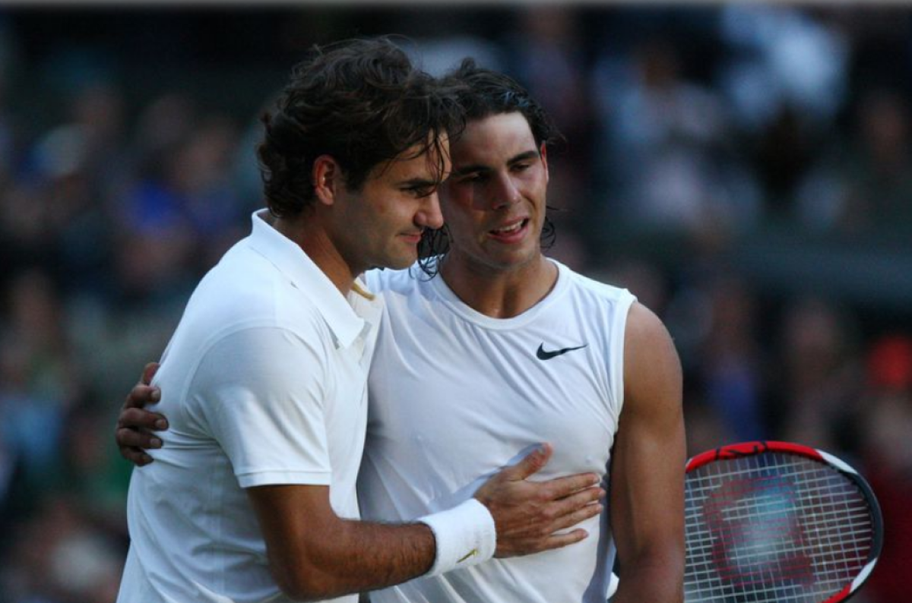

Ambos mantuvieron los dos principales puestos del ranking del ATP Tour desde julio de 2005 hasta agosto de
2011, y son el único dúo de hombres que haya acabado cinco años consecutivos en la cima de la lista de
clasificación. Federer ocupó el puesto n.º 1 durante un récord de 237 semanas consecutivas, a partir de
febrero de 2004. Nadal, que es cinco años más joven, llegó al puesto n.º 2 en julio de 2005 y mantuvo dicho
lugar un récord de 160 semanas consecutivas antes de superar a Federer el 18 de agosto de 2008. En
consecuencia, Nadal ocuparía el puesto n.º 1 y Federer el n.º 2.

Nadal lidera la serie de encuentros personales con 24 partidos ganados y 16 perdidos. Puesto que la
determinación de las cabezas de serie de los torneos se efectúa en función del ranking, 15 de sus encuentros
se produjeron en finales, incluido el récord histórico de más encuentros en finales de Grand Slam, 9, de los
cuáles Nadal ganó 6, (igualado por Nadal-Djokovic en 2020).
En lo que se refiere a los partidos de Grand Slam, se puede destacar que en 2005 se enfrentaron por primera
vez en la semifinal de Roland Garros. Durante tres años consecutivos, 2006–2008, se disputaron las finales
tanto de Roland Garros como de Wimbledon. Luego, en 2009, se enfrentaron en la final del Abierto de
Australia, 2 años después en la final del Roland Garros 2011 y 6 años después en la final del Abierto de
Australia 2017 adicionalmente, se enfrentaron en semifinales de otros Grand Slam; el encuentro de Wimbledon
2008 ha sido aclamado como el mejor partido de tenis de la historia por muchos experimentados analistas de
tenis.
El campeonato en el que más veces se enfrentaron es Roland Garros, donde Nadal lidera la serie 6-0 y la
superficie en la que más veces se enfrentaron es la dura, con 20, en los que Federer lidera la serie
11-9.
Con esto dicho, con el retiro del helvético en 2022 la rivalidad terminó en 2019 en el Campeonato de
Wimbledon en las semifinales, con victoria del suizo.

- Nadal es el tenista con más títulos de Grand Slam (22); Federer es tercero con 20, por detrás de
Novak Djokovic con 21.
- Nadal es el jugador con más títulos de Roland Garros con 14; Federer por su parte lo es de Wimbledon
con 8.
- Nadal es uno de los 2 jugadores junto a Andre Agassi en ganar el Golden Slam; Federer también ganó
la medalla dorada pero en la modalidad de dobles, mientras que en la rama individual se tuvo que
conformar con la medalla plateada en Londres 2012.
- Federer y Nadal son 2 de los 8 ganadores del Grand Slam (ganar los 4 títulos de Grand Slam, aunque
no sea en el mismo año)
- Federer y Nadal son junto a Björn Borg los únicos jugadores en ganar un Grand Slam sin haber perdido
un set.
- Desde Wimbledon 2003 hasta Roland Garros 2011 ganaron un imprecedente récord de 26 títulos de Gran
Slam de 32 posibles.
- Desde Roland Garros 2005 hasta Roland Garros 2011, Federer y Nadal ganaron 22 de 25 Grand Slam
posibles (12 de Federer y 10 de Nadal).
- Federer es el tenista con más Torneos de Maestros (6) junto a Novak Djokovic.
- Federer y Nadal nunca fueron derrotados por un tercer jugador en una final de Grand Slam hasta el
Abierto de EE.UU. 2009 y Wimbledon 2011 respectivamente.
- Nadal impidió que Federer ganara el Grand Slam en carrera venciéndolo en Roland Garros todos los
años desde 2005 a 2008.
- Nadal impidió que Federer ganara el Masters de Montecarlo venciéndolo todos los años de 2006 a 2008.
- Nadal es el segundo jugador con más títulos de ATP Tour Masters 1000 con 36, por detrás de Novak
Djokovic con 38; Federer es tercero con 28.
- Nadal es el jugador con más títulos del Masters de Montecarlo (11), Madrid (5), y Roma (10); por su
parte Federer lo es del Masters de Indian Wells (5, compartido con Novak Djokovic) y Cincinnati (7)
- Federer es el jugador con más títulos de ATP 500 con (24); Nadal es segundo con 23.
- Federer es el segundo jugador con más títulos ATP con 103, solo por detrás de los 109 de Jimmy
Connors; Nadal es cuarto con 91, detrás de Ivan Lendl con 94.
- No sólo que ambos poseen récords por victorias consecutivas en una superficie en la Era Abierta
–Federer tanto en césped (65) como en superficies duras (56); Nadal en arcilla (81)– sino que las tres
rachas fueron interrumpidas por el otro (Nadal, con balances de 9-11 y 1-3 contra Federer en pista dura
y hierba respectivamente, lo venció en las finales de Dubái 2006 y Wimbledon 2008; Federer, con balance
de 2-13 contra Nadal en arcilla, lo venció en la final de Hamburgo 2007).

La rivalidad entre Federer y Nadal ha sido una gran parte de las carreras de ambos jugadores. Sus
enfrenamientos en Grand Slam son de particular interés, especialmente su récord histórico de nueve finales
entre ambos (igualado por Nadal-Djokovic en 2020). Esto incluye haber jugado la final de Roland Garros y
Wimbledon durante tres años consecutivos (2006-08), culminando en lo que muchos consideran el mejor partido
en la historia del tenis en Wimbledon 2008. Nadal, tuvo que derrotar a Federer en sus primeros seis títulos
de Grand Slam desde Roland Garros 2005 a Australia 2009, además posee una ventaja de 6-3 en finales de Grand
Slam, así como una ventaja de 4-1 en semifinales.
Finalmente, ambos hombres no solo poseen récords en la Era Abierta, sino también los récords de victorias
consecutivas en una sola superficie - Federer en césped (65) y Hard (56) y Nadal en tierra batida (81),
curiosamente uno necesitó del otro para romper estas rachas. Sus respectivos dominios sobre césped y arcilla
fueron el impulso para la "Batalla de las superficies", Batalla de las Superficies de hierba y mitad de
arcilla, que Nadal ganó por 12-10 en el decisivo desempate del tercer set en mayo de 2007 cuando las rachas
en hierba y tierra batida todavía estaban activas.
Lo limitado de la temporada sobre césped (cuatro torneos, incluido Wimbledon) impide que los encuentros
entre Federer y Nadal sean más frecuentes sobre dicha superficie. Sin embargo, tres de sus cuatro
enfrentamientos sobre hierba se produjeron en finales de Wimbledon en La Catedral. En su primer choque en
césped, el español cayó ante el suizo en cuatro sets, y luego comentó que aquella seguía siendo una
«superficie complicada». Por aquel momento, Jimmy Connors rechazó la noción de que Nadal era tan sólo un
especialista en canchas de arcilla. Nadal mejoró su participación el año siguiente, cuando llevó a Federer a
cinco sets. No obstante, fue un año después, el 6 de julio de 2008, cuando Nadal consiguió alcanzar una
victoria histórica contra Federer sobre césped, poniendo fin al récord histórico del suizo de 65 partidos
consecutivos ganados en canchas de césped. Hasta ese momento, Federer llevaba 40 partidos seguidos sin
perder en Wimbledon (los demás triunfos se debían a rachas ganadoras en el Torneo de Halle en Alemania), y
se encontraba a un triunfo de empatar la mayor racha ganadora de todos los tiempos sobre césped, establecida
por Bjorn Borg (tanto Federer como Borg perdieron su sexta final consecutiva en Wimbledon, pero Tommy Haas
se había retirado por abandono durante su encuentro ante el suizo en 2007, por lo que la racha ganadora de
Federer contaba con un partido menos). 11 años después, Federer venció al español en 4 sets en las
semifinales de Wimbledon.
Los comentaristas han indicado en varias ocasiones que las diferencias en las personalidades y los estilos
de juego de Federer y Nadal son los principales ingredientes que convierten a esta rivalidad en una tan
irresistible de seguir. De todas manera, también hay que señalar que, fuera de las canchas, ambos tenistas
gozan de una relación de gran camaradería.
En una entrevista publicada el 23 de mayo de 2010 por el diario español de deportes Marca, Roger Federer
afirmó: "Rafa Nadal es mi heredero natural", dejando en claro la admiración que siente por el tenista
español, aunque también deslizó cierta crítica a la predilección de Nadal por el juego en arcilla: "No
quiero quitarle mérito a Rafa, porque es excepcional y ha ganado mucho. Pero creo que cuando se juega sobre
arcilla, uno puede tener problemas sin que se note tanto como en otras superficies".

- Mas grand Slams: Nadal
- Mas torneos de maestros: Federer
- Mas semanas como n1: Federer
- Mas titulos de Roland Garros: Nadal
- Mas titulos de Wimbledon: Federer
- Mas titulos de master 1000: Nadal
- Mas copas Davis: Nadal
- Mas partidos ganados entre si: Nadal
- Mas sets ganados entre si: Nadal
- Mas titulos del abierto de Australia: Federer
- Mas titulos de ATP 500: Federer
- Mas victorias entre si en cemento: Federer
- Mas victorias entre si en polvo de ladrillo: Nadal